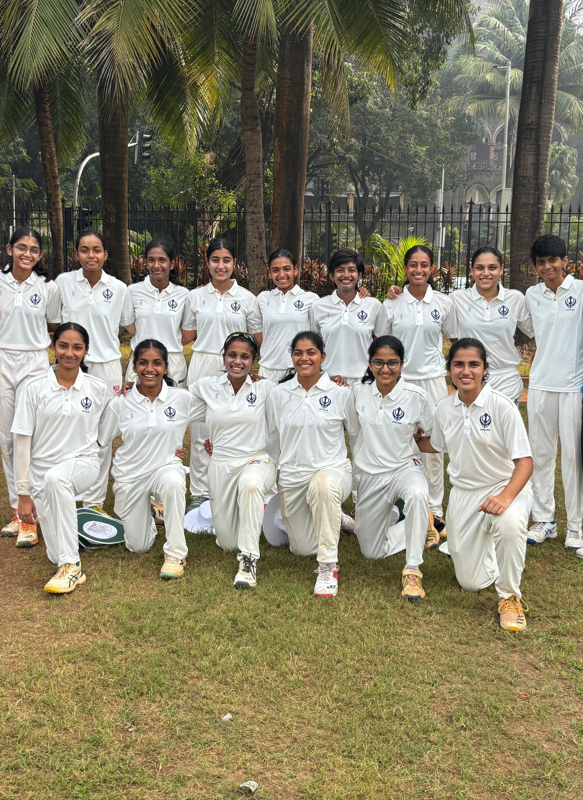

Building practical frameworks to balance real-world details.
I am a 17-year-old student from India focused on analyzing structural and educational gaps in underserved communities. Whether organizing defenses on the cricket field or designing offline tools for financial safety, I look for logic, numbers, and human connection.
Dedicated academic and administrative community support delivered across seasonal break periods.
Active athletic frame developing defense strategies and high-pressure competitive team coordination.
Sustained hands-on responsibility managing records and operational resource matching.
A constant shift between two completely different worlds.
My perspective is built on moving frequently between the high-speed energy of Mumbai and the grassroots realities of rural Pratapgarh. Living in both environments taught me early on that the biggest barrier people face isn't a lack of ambition—it's a gap in how modern systems and information are communicated to ordinary communities.
I’ve always gravitated toward roles where I have to step up and make moving parts work smoothly under pressure. Leading my cricket teams as a captain taught me how to read a high-stakes situation and adjust tactics on the fly. That same execution-first mindset carries over into my community work; whether I was tracking daily cash logs at a medical clinic or managing welfare funds for our church, Maseeh Prarthana Bhavan, I found that I genuinely enjoy the responsibility of making real-world details balance.
That is exactly why I founded a practical financial literacy initiative with the Asha Welfare Society. Instead of using confusing, text-heavy manuals, we designed a visual curriculum using physical play currency and mock boards to train 305 rural women and youth to navigate digital banking safely. Moving forward, I want to study economics and public policy to keep building the hands-on, scalable frameworks that open up real economic opportunities for underserved communities.
The Pratapgarh Financial Literacy Initiative
An experiential curriculum built around localized constraints rather than corporate templates.
The Core Insight
The Challenge
Standard institutional financial literacy materials rely heavily on text density, academic banking jargon, and assumptions regarding digital infrastructure connectivity that do not hold up inside low-literacy, rural communities.
The Execution
To make critical asset handling and digital smartphone banking (UPI) stick, the instructional methodology had to be tactile, visual, and entirely experiential. We used physical play currency notes for expense sorting and laminated mock QR boards to simulate phone transaction flows offline.
Execution Strategy
Authored a text-light curriculum using physical models to eliminate the intimidation factor of traditional banking applications.
Pioneered a scalable "Train-the-Trainer" framework. Recruited and prepared 3 regional youth volunteers to deliver synchronized multi-cohort instruction.
Deployed across 10 camp sequences. Monitored overhead costs down to a single rupee, recording variables inside a public tracking ledger.
The Core Syllabus Matrix
| Core Pillar | Field Implementation Strategy |
|---|---|
| Basic Banking & Account Setup | Navigating bank layouts, understanding Jan Dhan accounts, and mastering deposit slips. |
| Savings & Budgeting Frameworks | Interactive "Needs vs. Wants" classification setups using physical Gullaks (piggy banks). |
| Digital Payments & Transactions | Live, offline smartphone simulators tracking payment structures using laminated QR mock setups. |
| Loans & Interest Fundamentals | Demystifying the mechanics behind formal banking credit lines versus predatory local lending circles. |
| Fraud Awareness & Digital Safety | Establishing strict PIN secrecy checklists and simulating common real-world phone phishing attempts. |
Live Public Audit Data Ledger
Real-time expense tracking published directly from field operation accounts.
Leadership & Experience
Athletic organization, community mentorship coordinates, and operational bookkeeping roles.
Elite Women's Cricket
District & Zonal Team Captain | 2022 – Present
Over 3.5 years competing in high-pressure sports environments, directing tactical field coordination, defensive lineups, and athletic setups under pressure.
Mumbai Cricket Association (MCA) Selection Highlights
Ghatkopar Jolly Gymkhana; official tournament runner-up frame.
Selected consecutively for developmental frames at Nerul Gymkhana (2024) and Chembur Gymkhana (2025).
Identified as a state competitive asset during structural trials at NMSA Vashi.
Collegiate Frame: Anchored the top-order batting rotation for the G.N. Khalsa College varsity team to secure the Runner-Up title within the Maharashtra Directorate of Sports & Youth Services Tournament.

Asha Welfare Society
Community Educator & Coordinator
- • Provided structured academic teaching support for under-resourced learning structures during summer and winter breaks over a sustained 4-year commitment.
- • Realized a documented 35% average metrics improvement via targeted curriculum redesign.
- • Promoted to Coordinator level to direct schedule scaling and volunteer matching.
Khosla Clinic
Finance & Operations Assistant
- • Administered systematic ledger entry pipelines tracking transactional workflows and general operations.
- • Balanced a monthly cash flow baseline of ₹35,000 against localized overhead allocations.
- • Maintained precise inventory log sheets to minimize pharmaceutical supply expiry waste variables.
Maseeh Prarthana Bhavan
Elected Church Treasurer
- • Supervised transparent structural bookkeeping records for local philanthropic contributions.
- • Maintained systematic community fund allocations with high clarity and balance logs.
- • Prepared clear ledger balance statements to coordinate seasonal aid and resource distribution lines.
Academic Interests & Research Areas
Analytical disciplines targeted for long-term policy and development tracks.
Development Economics
Investigating infrastructure gaps, localized micro-capital lines, and systemic accessibility parameters inside rural economic environments.
Public Policy & Financial Inclusion
Analyzing the long-term community adoption rates of modern digital transaction layers across regions facing low-literacy baselines.
Behavioral Finance Models
Evaluating visual-first instructional frameworks engineered to clear technological anxiety for non-textual users.
Social Ledger Systems
Structuring open, transparent operational auditing metrics for field deployment setups inside civic groups.
Certificates & Educational Records
Entrepreneurship in Emerging Economies
Analytical study covering venture scaling strategies, structural market alignment constraints, and social impact execution frameworks inside developing regions.
Curriculum Vitae
Download Resume PDFConnect
Reach out via the verified personal channels below for academic coordinates or file review coordination: